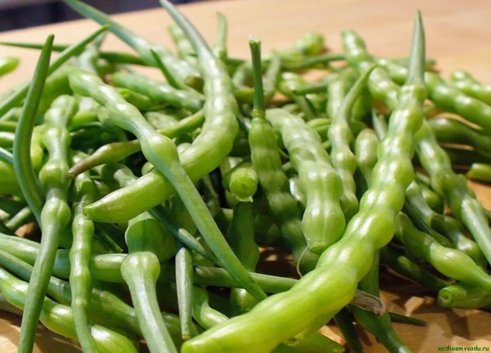
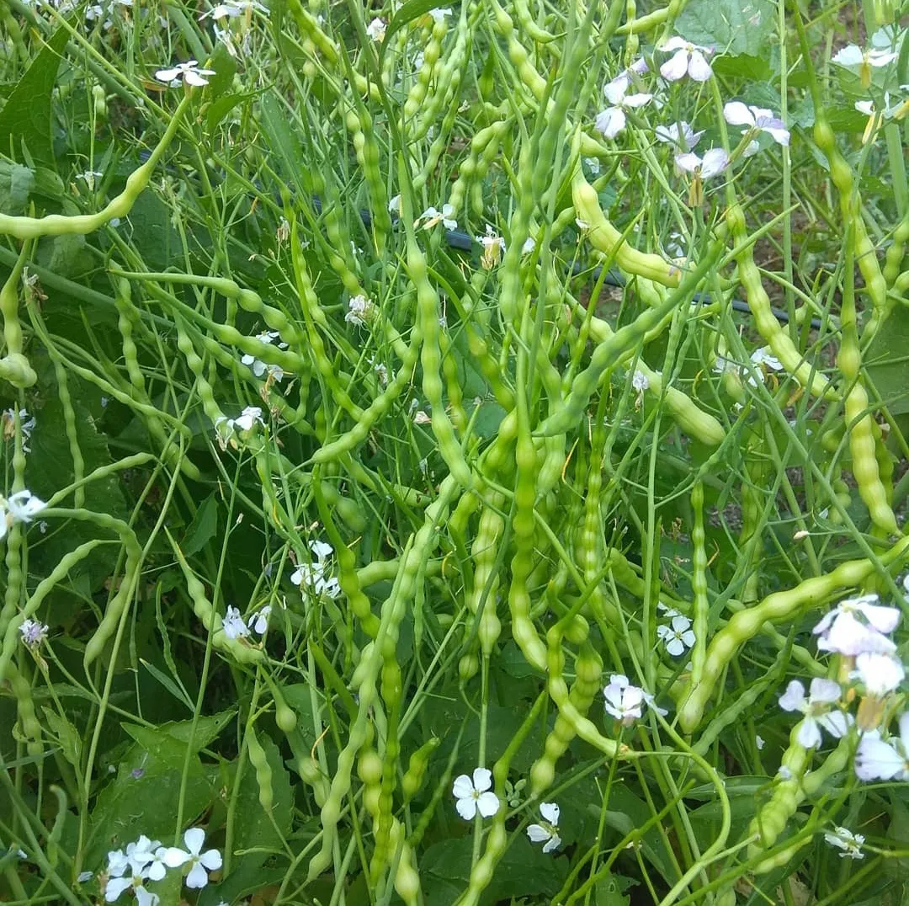

Экзотический родственник привычного редиса, который образует не корнеплоды, а сочные стручки длиной 10–12 см со сладко-острым вкусом.
Преимущества культуры для вашего участка.
Каждый сорт уникален — от формы до вкуса.
Яванский редис в разные сезоны: от всходов до сбора урожая.


Всё, что нужно знать о культуре: от посадки до хранения.
Яванский редис — неприхотливая культура, выращивание которой мало отличается от обычного редиса. Главное отличие — в пищу используют не корнеплоды, а сочные стручки.
Яванский редис не образует корнеплодов. Его выращивают ради сочных стручков длиной 10–12 см, которые по вкусу напоминают обычную редиску с лёгкой остринкой.
Стручки собирают в стадии молочной спелости, примерно через 60–70 дней после посева. Важно не передерживать — перезревшие стручки становятся волокнистыми.
Да, яванский редис можно выращивать в контейнерах на балконе или подоконнике. Главное — обеспечить достаточно света и регулярный полив.
Посадочный материал из коллекции Batatchudo и рекомендации по выращиванию.